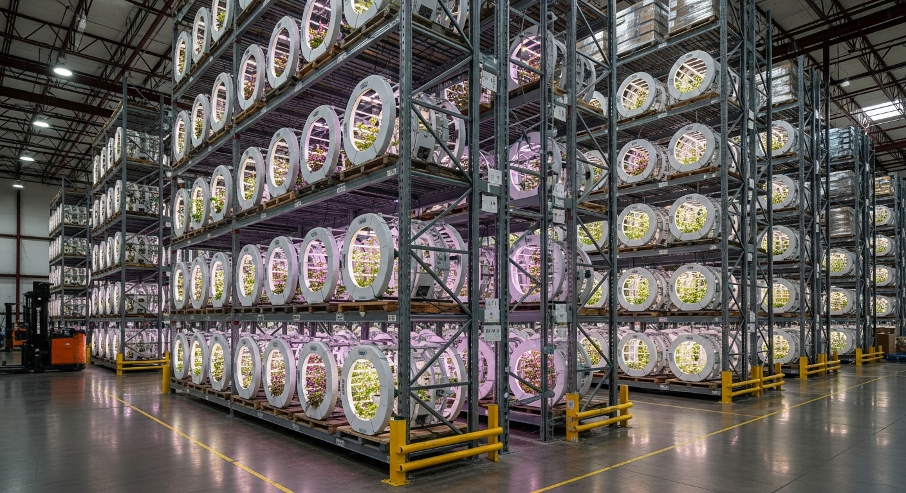

NURI가 만드는 사회적 가치
기술 혁신과 사회 통합을 동시에 추구하는 컨소시엄형 표준사업장
장애인 일자리 창출
정규직 고용과 적정 임금 보장. 괴산군과 협력하여 1차년 5명으로 시작, 5차년 40명까지 단계적 확대 (이후 추가 채용 없음)
ESG 경영 지원
연계고용 감면 제도로 대기업 고용 부담금 최대 50% 절감. 아모레퍼시픽, 동국제약 등 파트너십 추진
병풀(시카) 국산화
수입 의존도 95% 시장을 공략. 무농약 청정 재배로 화장품·제약 원료 연 50~100억 매출 목표
3세대 AI 기술
누리셀 LangGraph Multi-Agent + GraphRAG로 생산성 3~5배 향상. Farm8 기술 파트너십 검증 완료
누리셀: 3세대 지능형 스마트팜
Software Defined Farm - 소프트웨어가 정의하는 농장
왜 3세대 이상인가?
| 세대 | 구동 방식 | 비유 | 누리셀 |
|---|---|---|---|
| 1세대 | 원격 제어 | 리모컨 | 기본 포함 |
| 2세대 | 규칙 기반 자동화 | 타이머/온도계 | 기본 포함 |
| 3세대 | 데이터 기반 AI | 자율주행차 | 핵심 기술 |
| 3세대+ | 생성형 에이전트 협업 | AI 농장장 | 지향점 |
AI Brain
LangGraph Multi-Agent가 환경/병해충/설비를 자율 판단. 단순 규칙이 아닌 상황 맥락 기반 제어.
Knowledge Graph
GraphRAG로 재배 이력의 인과관계를 학습. "습도 80% -> 흰가루병" 같은 패턴을 예측 방제에 활용.
Wireless Mesh
ESP32 + LoRa 무선 메시 네트워크로 Plug & Play 확장. 유선 대비 시공비 70% 절감.
Process Mining
MLOps로 생육 병목을 실시간 탐지. LSTM 수확일 예측 정확도 85%+, 에너지 효율 30% 개선.

누리셀 적층형 랙 시스템
4층 적층형 x 5연동 = 총 2,240개 재배 유닛. LED 풀스펙트럼 조명 일체형 원형 포트, 독립 양액 순환, AGV 자동 이송 시스템을 갖춘 특허 출원 기술입니다. Farm8(국내 1위 스마트팜)과 MOU 체결, 생산성 3~5배 향상 검증 완료.
누리셀 기술 자세히 보기🤖 피지컬 AI - 로봇 자동화 시스템
Software Defined Robot Farm - AI가 제어하는 물리적 작업 자동화
피지컬 AI란? - 디지털 지능을 물리 세계로 확장
기존 스마트팜은 센서로 읽고 → AI가 판단하고 → 사람이 실행하는 구조였습니다. 누리셀 3세대+는 센서로 읽고 → AI가 판단하고 → 로봇이 실행하는 완전 자동화 피지컬 AI 시스템입니다. 장애인 근로자는 무거운 육체 노동 대신, AI와 로봇을 관리·감독하는 스마트 워커로 전환됩니다.
핵심 가치: 장애인이 "할 수 없는 일"을 로봇에게 맡기고, "할 수 있는 일"에 집중할 수 있도록 설계된 포용적 자동화 시스템입니다.
💧 자동 관수·양액 로봇
문제: 물통/양액통 들기 → 장애인 근로자에게 가장 힘든 작업
해결: 레일 기반 자동 관수 로봇 (누리셀 특허 출원 예정)
- AI 센서 연동: 토양 수분 20% 이하 → 자동 급수
- 레일 이동: 5동 하우스 순회 관수 (시간당 500주)
- 양액 자동 혼합: 작물별 NPK 비율 AI 최적화
- 휠체어 작업자 대응: 작업자는 태블릿으로 원격 모니터링만
🌿 수확 작업 시스템 (누리셀 이동식)
문제: 랙 환경에서 직접 수확 → 발달장애·경계성장애인에게 압박감
해결: 누리셀을 작업동으로 이동 → 밝고 쾌적한 공간에서 작업
- Vision AI 수확 시기 판단: LSTM 예측 → "오늘 A동 누리셀 #42~#58 수확 권장"
- 누리셀 자동 이동: AGV(무인운반차)가 해당 누리셀을 작업동으로 운반
- 작업동 환경: 발달장애인 근로자가 밝은 조명·넓은 공간에서 편안하게 수확·포장
- AI 음성 안내: "오른쪽 잎부터 수확하세요" 단계별 작업 지시
- 무게 센서 자동 분류: 규격 미달 자동 제거 → 근로자는 포장만 집중
🚁 병해충 방제 드론
문제: 농약 분무 → 호흡기·피부 위험 (장애인 근로자 건강 우려)
해결: 자율비행 방제 드론 (Farm8 협력)
- Vision AI 병해 조기 감지: 카메라 촬영 → 흰가루병 85% 정확도 탐지
- 정밀 국소 방제: 감염된 구역만 선택적 분무 (농약 50% 절감)
- 자율비행 경로 생성: SLAM 알고리즘으로 장애물 회피
- 야간 자동 작업: 근로자 퇴근 후 무인 방제
환경 제어 로봇 (천창/측창 자동화)
문제: 천창/측창 수동 개폐 → 장애인 근로자 접근 불가
해결: BLDC 모터 기반 자동 개폐기 (누리셀 통합 제어)
- AI 온도 예측 제어: "30분 후 32도 예상" → 미리 천창 개방
- 강풍 자동 감지: 풍속 15m/s 초과 시 긴급 폐쇄
- CO2 자동 공급: 농도 300ppm 이하 → CO2 발생기 가동
- 스마트폰 원격 제어: 근로자가 집에서도 긴급 대응 가능
피지컬 AI 기술 스택
🧠 AI Layer
- Vision AI: YOLOv8 (병해충 탐지)
- Predictive AI: LSTM (수확일 예측)
- Optimization AI: 강화학습 (에너지 최적화)
🤖 Robot Layer
- ROS2: Robot Operating System
- SLAM: 자율주행 경로 생성
- BLDC Motor: 정밀 제어 구동기
📡 Communication Layer
- ESP32 + LoRa: 무선 메시 네트워크
- MQTT: IoT 메시지 브로커
- WebSocket: 실시간 대시보드
🏆 Farm8 vs 누리셀 - 피지컬 AI 비교
| 구분 | Farm8 (2세대) | 누리셀 3세대+ (Physical AI) |
|---|---|---|
| 자동화 수준 | Rule 기반 (타이머/온도계) | AI + 로봇 완전 자동화 |
| 관수 시스템 | 수동 물통 운반 (노동 집약) | 레일 로봇 자동 관수 (특허 출원 예정) |
| 수확 방식 | 100% 인력 수확 | 인간-로봇 협업 (컨베이어 자동 이동) |
| 방제 | 사람이 분무기 들고 직접 살포 | 자율비행 드론 (Vision AI 병해 감지) |
| 장애인 고용 | ❌ 육체 노동 필요 → 고용 어려움 | 로봇 관리·감독 역할 → 72.7% 고용률 |
병풀(시카) 사업: 게임 체인저
수입 대체 국산화로 연 매출 50~100억 원 목표
시장 기회
타겟 고객사
아모레퍼시픽
LG생활건강
한국콜마, 코스맥스
동국제약 (마데카솔)
대웅제약
KGC인삼공사
한국야쿠르트
🚀 핵심 영업 무기: 연계고용 감면 제도
Cost Save
구매액 최대 50% 부담금 감면
ESG Value
"장애인이 키운 시카" 스토리
High Quality
유효 성분 2~3배, 중금속 제로
NuriFarm 괴산점 (1호 사업장)
충청북도 괴산군 사리면 방축리 449, 531-1, 2, 3 (4필지)
위치
괴산군 사리면 방축리
규모
부지 2,000평 / 하우스 500평
고용 (5차년 최종)
장애인 40명 + 작업지원인 10명 + 관리직 5명
개소
2027년 Q1 예정
📸 NuriFarm 괴산점 시설 렌더링
2026년 상반기 개소 예정인 NuriFarm 괴산점은 단순한 스마트팜을 넘어, 장애인과 비장애인이 함께 일하는 포용적 농업 공간입니다. 2,000평 부지에 최첨단 누리셀 3세대 스마트팜 하우스와 함께 직원 기숙사, 다목적홀, 카페를 갖춘 통합형 농업 복합 시설로 설계되었습니다. 장애인 근로자 40명이 휠체어로 이동 가능한 넓은 통로와 높이 조절 가능한 작업대에서 편안하게 근무할 수 있으며, AI가 환경을 자동 제어해 누구나 쉽게 작물을 재배할 수 있습니다. 누리팜과 괴산군의 컨소시엄으로 운영되며, 정부 지원금 20~30억 원과 인건비 지원 연 8억 원을 활용해 지속 가능한 사회적 기업 모델을 구축합니다.
🌾 재배 작물 포트폴리오
Cash Cow - 안정 수익
High Margin - 단가 3~5배
Niche - 소포장 판매
Future - 단가 10배+